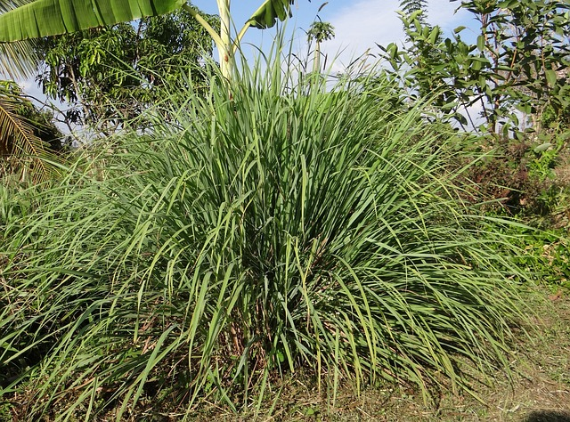
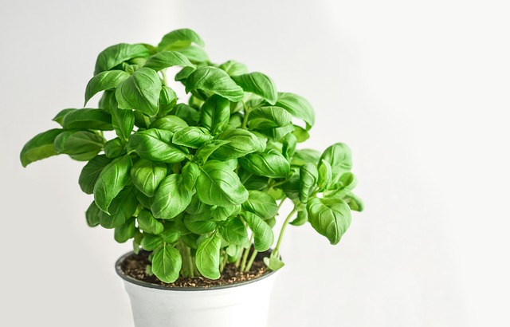
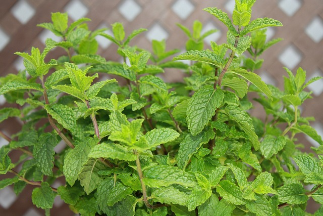

Plantas antimosquitos

Muchas veces olvidamos que la solución a muchos problemas se encuentra en la naturaleza. Aprender más sobre nuestro entorno puede sernos muy útil, sobre todo cuando queremos combatir las posibles molestias que acarrean algunos pequeños insectos, como los mosquitos, y sus tediosas picaduras. No necesitarás gastar dinero en productos químicos, que además dañan el medio ambiente, si aprendes cuál es la mejor planta para ahuyentar a los mosquitos o qué olor ahuyenta a los mosquitos más fácilmente. La respuesta a estas preguntas y tu solución viene de la mano de nuestras adoradas plantas aromáticas para exterior y para interior. Con ellas, estarás más protegido contra estos incansables y molestos insectos, que a la vez son necesarios en la naturaleza.
En este artículo de Foco Ecológico queremos darte un listado de las plantas antimosquitos que puedes tener en tu hogar. ¡Toma nota!
Cymbopogon nardus o citronela
Sin duda una de las plantas más utilizadas para repeler mosquitos. Su gran efectividad ha hecho de la citronela no solo una de las más conocidas para deshacerse de estos insectos, sino que, además, podemos encontrar su inconfundible perfume en velas, pulseras e incluso parches antimosquitos. Esta planta herbácea se puede cultivar tanto en su forma arbustiva como en maceta. Además, tampoco necesita grandes cuidados solo ubicarla siempre en un lugar iluminado y controlar el riego para evitar que se le sequen las raíces.
Lavandula spica o lavanda
La lavanda es una de las plantas aromáticas más conocidas y, por ende, utilizadas no solo para decorar, sino también para perfumar el ambiente con su agradable aroma. A su perfume se le atribuyen, además de sus propiedades medicinales contra el estrés, la capacidad de repeler insectos, entre ellos los mosquitos. Esta planta no requiere cuidados específicos y puede cultivarse tanto en jardines como planta de exterior como en maceta.
Ocimum x citrodorum o albahaca
Una de las plantas repelentes de mosquitos más utilizadas y conocidas es la albahaca. Esta planta aromática, muy utilizada en cocina, no solo es capaz de ahuyentar a los mosquitos con su aroma cítrico, sino que, además también elimina sus larvas. De hecho, también repele a otros insectos molestos como las moscas. Te recomendamos que coloques tu planta de albahaca cerca de las puertas o ventanas para evitar que esos pequeños indeseables entren en tu hogar.
Mentha spicata o hierbabuena
Esta es otra de las reinas en cuanto a sus múltiples usos dentro de las plantas aromáticas. La hierbabuena no solo sirve para repeler a los mosquitos, sino también para utilizarse como remedio natural contra el picor de las picaduras de mosquito. Además, también ahuyenta a otros insectos como moscas y hormigas. No necesita muchos cuidados, solo un recipiente ancho y con un buen drenaje para que pueda crecer sin problemas.